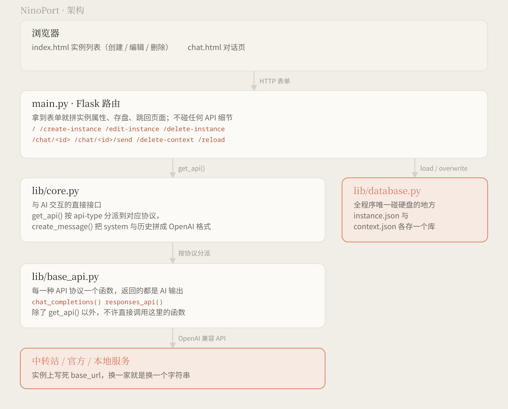

一个实例，就是一个对话入口
一套 API Key ＋ 一个模型名，填进 NinoPort 就得到一串编号，点开直接聊。 协议、思考强度、系统提示词、要不要带历史，全都收在那张卡片里； 配置和上下文只躺在你自己电脑上的几个 JSON 文件里。
它能替你记着的事
那些每次开新对话都要重抄一遍的东西——哪家中转站、哪个模型、参数怎么填——全归实例管。
多协议
实例上直接选 Chat Completions、Responses
还是 Anthropic Messages，各家写法不一样的部分在
lib/base_api.py 里消化掉了。
思考开关与强度
thinking 和 reasoning_effort 是两个独立参数，
因为不同协议的表达方式不一样。强度只列官方认的那几个值。
等效代码
填表的时候右边实时生成这个实例将来真正发出的那段调用，跟着所选协议走。 填错了当场能看见，想抄走也随手。
测试连接
填完表单先点一下「测试连接」，它拿这套配置真发一条消息出去。 通了把回复原样给你看，不通就把接口那边的话贴回来，不用建完再进对话页试。
系统提示词
留空就完全不发 system 消息，不塞空字符串。Responses 走的话，
它会单独变成 instructions；Anthropic 则是顶层的
system。
保存上下文
关掉之后每轮只发当前这一条，旧的上下文也不再留着，对话页上只剩这一问一答。 想留底就先导出。
最大输出 token
每套实例单独设，按服务商的模型上限填。Chat Completions 和
Anthropic 发 max_tokens，Responses 换成
max_output_tokens。
对话页
AI 的回复按 markdown 渲染（marked 解析、DOMPurify 消毒）。 报错的那条单独标出来，原样显示不渲染；每条回复都能一键复制 Markdown 原文。
导出与导入
上下文导出成 JSON，也能拿回来导入。导入前先校验文件里是不是 一个合格的数组，不对就不让提交。
Agent 接口
一组 /agent 路由，用 curl 就能给某个实例发消息、
读它的上下文，不用开浏览器。参数说明在
127.0.0.1:5000/agent。
三层，加上一格破例的
边界划得比较死：谁收表单、谁跟模型说话、谁碰硬盘，各管各的。

- main.py 只管 Flask 那点事：收表单、拼配置、存盘、跳页面，不碰任何 API 细节。
- lib/core.py 是与 AI 交互的直接接口：按
api-type分派协议， 再把系统提示词和历史拼成 OpenAI 标准格式。 - lib/base_api.py 每种协议一个函数，返回的都是 AI 输出。外面只许从
get_api()进来。 - lib/database.py 是全程序唯一碰硬盘的地方，所以单独放着。
跑起来
Windows · 下下来就能用
每次发版都会自动打一个 NinoPort-*-windows.zip，里面是
NinoPort.exe、一个空的 database/ 文件夹、许可和说明。
解压双击就开窗，模板和静态文件都塞在 exe 里，不用装 Python。
exe 没签名，Windows 可能先拦一下，点「更多信息」→「仍要运行」。
或者从源码跑
需要 Python 3.11 或更高版本（用到了 typing.Unpack）。
macOS 和 Linux 目前只有这条路。
git clone https://github.com/Pinpe/ninoport.git cd ninoport pip install -r requirements.txt python main.py
然后打开 http://127.0.0.1:5000，点「创建实例」。
API Key 只写进本机的 database/instance.json，不上传也不加密——
记得别把它挂到公网上，也别把 database/ 提交上去。